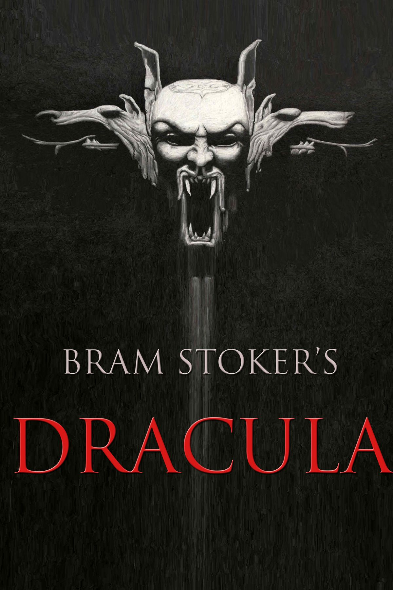
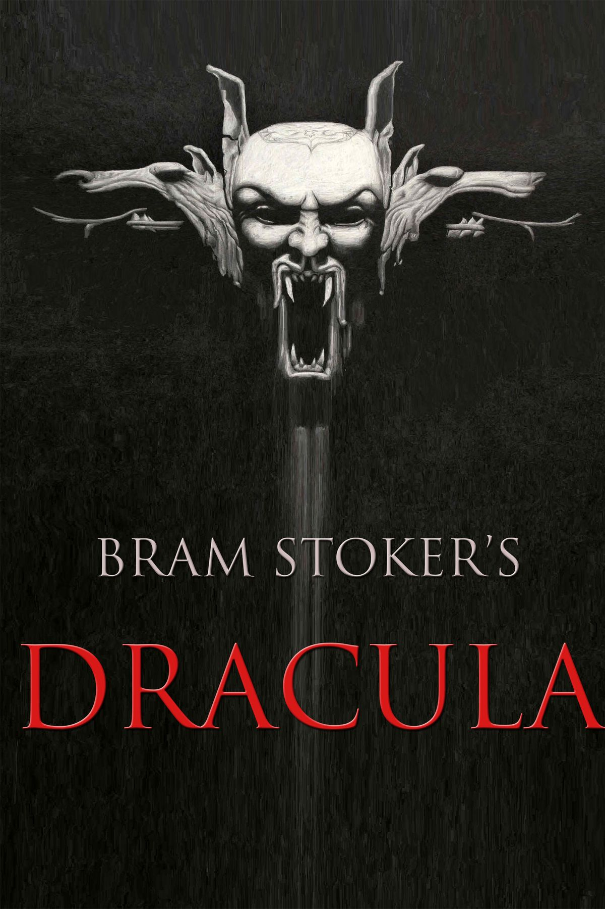

Santo Tomás de Aquino
"Drácula", de Bram Stoker, embora um romance gótico, antecipa temas da ficção científica. A obra reflete o choque entre o avanço tecnológico e forças misteriosas que desafiam a razão. Drácula representa o passado mítico, enquanto os heróis usam ciência e tecnologia para combatê-lo, num embate típico da ficção científica entre racionalidade e o desconhecido.
"Fahrenheit 451", de Ray Bradbury, usa a ficção científica para criticar a censura e o impacto negativo da tecnologia no pensamento crítico. A obra alerta para uma sociedade onde a alienação e o conformismo anulam a liberdade e o questionamento humano.
Em "Admirável Mundo Novo", Huxley critica uma sociedade controlada pela tecnologia e conformismo, onde a liberdade é sacrificada pela estabilidade. A obra alerta para os perigos de uma vida "perfeita" sem autonomia ou pensamento crítico.
"Memórias do Subsolo" explora a angústia de um homem que rejeita a sociedade e busca a liberdade através do sofrimento. A obra critica o determinismo e revela a complexidade humana, mostrando que a verdadeira liberdade vem da confrontação interna.
"Crepúsculo dos Ídolos" é uma crítica feroz à moralidade tradicional e aos "ídolos" da cultura ocidental, como a religião, a filosofia e os valores da sociedade. Nietzsche questiona as ideias estabelecidas e propõe uma nova visão de liberdade e autenticidade, onde o indivíduo deve se libertar dos dogmas e criar seus próprios valores.
"Assim Falou Zaratustra" apresenta a jornada filosófica de Zaratustra, que ensina sobre a superação do homem e o conceito do Übermensch (além-do-homem). Nietzsche propõe que, para alcançar a verdadeira liberdade, o indivíduo deve romper com os valores tradicionais, abraçar a vida em sua totalidade e criar seus próprios valores. A obra desafia a moralidade convencional e exalta a importância da autossuperação e da afirmação da vida.
"Além do Bem e do Mal" é uma crítica contundente à moralidade tradicional e aos conceitos absolutos de certo e errado. Nietzsche desafia a visão dualista da moralidade, propondo que os valores morais são construções sociais e históricas, e não verdades universais. A obra sugere que, para alcançar a verdadeira liberdade, o indivíduo deve transcender as normas impostas e criar seus próprios valores, sem se submeter às convenções herdadas.
"Frankenstein" explora os limites da ciência e da ética, abordando as consequências da busca desenfreada pelo conhecimento e pela criação sem responsabilidade. A história de Victor Frankenstein e sua criatura questiona o que significa ser humano e até onde a ciência deve ir para alterar a natureza. A obra também reflete sobre o isolamento, o arrependimento e a rejeição social, mostrando como a criação de algo sem empatia ou compreensão pode resultar em tragédia.


Você sabe o que é?
A ficção científica é o laboratório da imaginação. É onde escritores, cineastas e artistas testam ideias que ainda não existem, mas que um dia podem se tornar realidade. Em suas páginas ou telas, vemos humanos cruzando galáxias, robôs desenvolvendo sentimentos e sociedades transformadas pela tecnologia. Mais do que prever o futuro, a ficção científica nos faz olhar para o presente com outros olhos, questionando nossas escolhas e o rumo que damos ao conhecimento.
Somos uma equipe formada por duas pessoas, movidas por um interesse comum na ficção e filosofia.
Os conteúdos desenvolvidos tem o objetivo de compartilhar conhecimento, estimular a leitura e a reflexão, e aproximar mais pessoas desses universos fascinantes.
Acreditamos que tanto a ficção quanto a filosofia são ferramentas poderosas para expandir horizontes, questionar o mundo ao nosso redor e imaginar novos futuros.
Por isso, nosso trabalho aqui é voltado a quem se interessa por esses temas, oferecendo conteúdo acessível, instigante e, acima de tudo, inspirador.
Queremos incentivar a leitura, o pensamento crítico e a curiosidade porque, no fundo, acreditamos que boas ideias começam com boas perguntas.
Sejam bem-vindos!